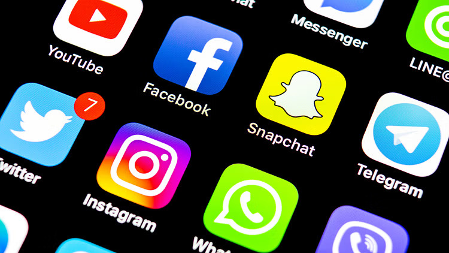

How Misinformation Spreads
With the begining of the Information Age, people are no longer limited to only a small number of local sources to get news from. Anyone with a device and connection to the internet is able to learn what is happening in the world from a large multitude of sources.
The problem with this access to information, is that there is nothing stopping sources from providing either partially wrong, or completely wrong information.
Image credit to National Herald India.
Social Media
It should be no surprise how quickly and easily misinformation can spread across social media. There are tons of factors that go into why the internet is such a breeding ground for misinformation, but some of the biggest reasons are the huge numbers of users and the fact that a relative few of those users will research further into the news they read. Social Medias that promote content based on user engagement are especially susceptible to the spreading of misinformation. This is because the false information will likely receive more attention than the truth, so it is shown to more users which creates a feedback loop.